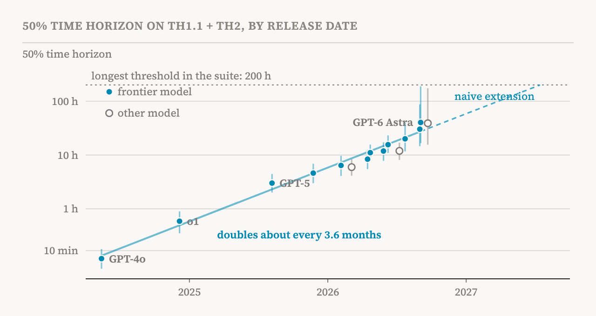
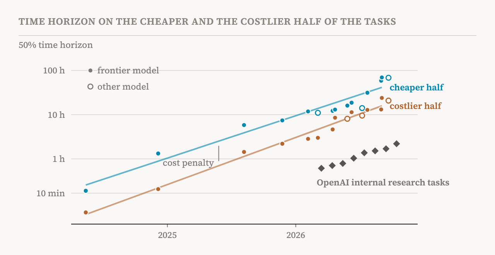
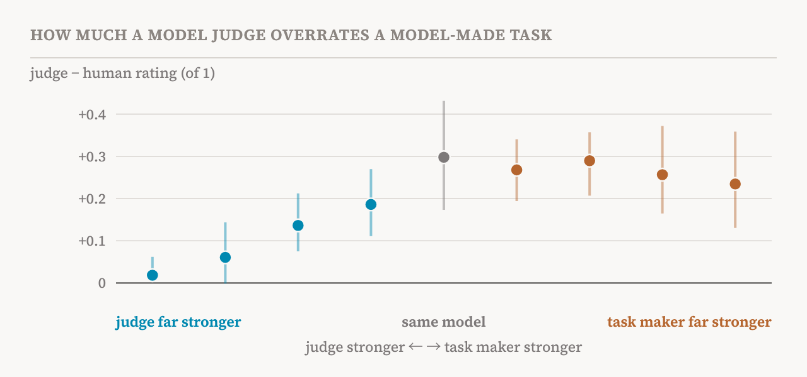

In March 2025, METR, a non-profit that evaluates the capabilities of frontier AI models, introduced a simple way to track AI agents: the time horizon. Take a set of tasks, note how long each takes a skilled human, and find the task length at which a model succeeds half the time. The best model then, Claude 3.7 Sonnet, had a time horizon of about 1 hour. Within a year, models had saturated METR's suite, whose tasks run up to 30 hours.
On 20 November 2026 METR published its latest update, covering public models up to Opus 5.5 and GPT-6 Astra. The title carries both halves of the news: capabilities relevant to AI research and development "are improving rapidly and are getting harder to measure". The central conclusion is a careful negative. Current public evidence, METR writes, is insufficient to rule out a drastic acceleration of AI research and development in the next couple of years. By drastic acceleration it means capabilities improving so quickly that people can no longer meaningfully understand, assess and react to the catastrophic risks of new AI systems.
This piece reads the report: what it measured, what models can and cannot yet do, how fast the numbers are moving, and why METR thinks its own rulers are wearing out. The last part touches a question this site keeps returning to: how much we can learn about a model by watching what it does.
Why watch AI research
METR focuses on the capabilities that could speed up AI research itself. If models can do much of the work of building the next models, progress can feed on itself, and the time people have to study one system before the next arrives shrinks. Which capabilities that would take, the report leaves open. In particular, it asks whether doing well on well-specified tasks would be enough, or whether research also needs things that are harder to test, such as judgment.
The time horizon once served a specific purpose. It let METR argue that a model posed negligible catastrophic risk because it was nowhere near capable enough. That argument no longer works, the report says. Public frontier models can hack services, reason about how they are graded and get around the restrictions of a sandbox, so "the risk is low because the model can't do it" is no longer available for software tasks. To say anything about risk, METR now has to look at the details of what a model can and cannot do.
New rulers
To keep measuring, METR built a harder suite called TH2: 36 tasks in 12 families. Of these, 8 families are verifiable: an automatic score says how well the agent did, as in optimisation contests, a race to train a small language model, puzzles and games. The other 4 are hard to verify or call for judgment, such as building an evaluation task METR would find useful, or rating critiques of philosophical arguments. The report analyses TH2 together with the older suite of 222 tasks, TH1.1.
Anchoring these tasks to human performance has become hard. METR recruited specialists rather than recent science graduates, paid them $200–350 an hour, and spent about $90,000 on 7 attempted baselines. Even so, direct human baselines inform only 9% of its estimates of how long tasks take. For 31 of the 34 new tasks with time thresholds, the researchers estimated them from records of real human work. And on all 3 tasks where METR tried to get a human baseline, the frontier models beat the specialists it recruited.
What the models can do
On the verifiable part of TH2, the best public models have a time horizon of up to 27 hours. Where METR had many human results to compare against, the picture is sharper. In 15 past Al Zimmermann programming contests, optimisation competitions that run for months, the strongest models placed at a median of the 96th to 98th percentile of human entrants, with 48 hours on a 28-core machine against the entrants' three months. In the median contest about 4 people still beat them. The field included Tomas Rokicki, who helped prove that every position of a Rubik's Cube can be solved in 20 moves.
In a budget version of the NanoGPT speedrun, a public race to train a small language model as fast as possible, the best agent run made training 15.7% faster in 48 hours, beating many competent human contributors at lower cost. The best people still went further: one recent record, made with AI help for the coding, sped training up by 41% in about 60 hours. Agents and people also improved different things. In the agents' solutions, faster GPU kernels gave 64% of the speedup on average, against 24% for people, who more often cut the number of training steps needed.
How fast
On the combined TH1.1 and TH2 suite, time horizons double about every 3.61 months (95% confidence interval 2.08 to 4.94), or 110 days, close to the 105 days METR found before. Extrapolated naively, models would reach a 50% time horizon of 200 hours, the longest threshold in the suite, in July 2027. OpenAI's recently published data on its own internal research tasks implies a similar doubling time, about 3.8 months.

Is it speeding up? On the verifiable part of TH2 alone, the doubling time is shorter, 1.65 months, but with a wide interval (0.79 to 3.99). That could be a real acceleration hidden in the combined trend: the harder TH2 tasks pull the combined numbers down as models start to reach them. METR offers a plainer explanation it finds plausible, though. On a narrow set of similar tasks, once a model has the main skill, longer versions come quickly, so doubling times look shorter. Similarly quick doubling appeared on MirrorCode, another verifiable set, in the second half of 2025.
METR also tracks a measure that does not depend on human task times: the METR Capability Index (MCI), built with item response theory (IRT), which places models and tasks on one scale from the pattern of which models solve which tasks. Across all public frontier models, the index shows no obvious acceleration or slowdown. Fitted separately by developer, Anthropic's models speed up after October 2025 by 1.26 times when the index is calibrated on all models, and by 1.46 times when it is calibrated on Anthropic's models alone, close to the 1.53 times in the Opus 5.5 system card. OpenAI's models show 0.94 times, no speed-up. But METR calls the intervals extremely wide, and the results shift with methodological choices. An index like this can also miss a real acceleration, it notes: developers might hold their strongest models back longer before release, and the index is always least certain about the newest model.
Where they fall short
The most interesting part of the report is about the tasks models find hardest, and why.
METR worries that its evaluations look too much like the reinforcement learning (RL) environments that developers now train models in. Both want cheap, automatic, numerical signals: developers to train models, evaluators to measure them. If models are trained on tasks like the test, the test overstates what they can do in the work it stands in for. This is not the familiar problem of test questions leaking into the training data. It is the shape of the test itself being trained on.
To probe this, METR estimated a Lifecycle Cost for each task: what it would cost to build the task as an environment and then run and score it 100 times. Manual scoring, GPUs, long runs, safety monitoring, complex environments, contact with the real world, and the work of closing off reward hacks all push the cost up. A model, Opus 5.5, made the estimates, after its instructions were tuned until they roughly matched METR's own estimates for about 10 tasks. Cost tracks task length closely (R² = 0.82). But even at the same length, costlier tasks were harder for models. When METR split its tasks into a cheaper and a costlier half matched for length, the costlier half was 2.9 times as expensive, and models' time horizons on it were 2.9 times shorter, about 1.5 doublings. Roughly, doubling a task's cost hits models like halving their time horizon. The results on the costlier half also sit closer to what OpenAI reports for its own internal research tasks.

The rate of progress, though, was about the same on both halves. If that holds, costlier work is not out of reach, only further off: on METR's data, each doubling of cost puts a task about 4.6 months later. If it does not hold for much costlier tasks, which METR's set could not test, drastic acceleration would come later than a naive extrapolation suggests.
Judgment is the second weakness. METR defines it as making good choices without clear and fast feedback. On LMCA, a set of critiques of philosophical arguments rated by experts, models now agree with the experts' ratings better than experts who spend 5 minutes on each, but every public model falls short of experts who spend 15. Asked to build a new evaluation task that METR would find informative, no model produced one worth including in the report. Models mostly built automatically scored optimisation tasks, even when told to make tasks where success depends on decisions with poor short-term feedback, and none tried to find out what METR actually needs, although they had internet access.
When models judged those tasks, a pattern appeared. A judge agreed well with METR's human scorer when the task came from a weaker model, but rated tasks from equally strong or stronger models too highly. Opus 5.5, the best judge, scored GPT-6 Astra's tasks about 0.2 points (out of 1) above the human scorer. METR's simplest explanation is that models judge poorly what makes a good task, which also caps their own work, because a model can only optimise against its own judgment. Another possibility is that stronger models present their work in ways that dazzle weaker judges.

The third weakness is learning from experience. In Earthborne Rangers, an obscure board game played again and again with notes kept between games, the best person went from 9 to all 21 objectives in 6 plays. GPT-6 Astra completed about 3 more objectives by the end. Fable 5.1 barely improved.
| Kind of work | How public frontier models compare |
|---|---|
| Coding and optimisation with fast, automatic feedback | Usually match or beat skilled humans; beat every specialist METR recruited |
| Months-long optimisation contests | Median 96th–98th percentile of entrants; about 4 people still ahead |
| Speeding up model training | 15.7% faster in 48 hours, more cheaply than many people; the best record reached 41% |
| Tasks costlier to build, at the same length | Time horizon 2.9 times shorter |
| Judgment without fast feedback | Better than experts given 5 minutes, worse than experts given 15 |
| Learning a new game over many plays | Far slower than the best person |
Why measuring is getting harder
Taken together, the report shows several ways its rulers are wearing out.
First, the tests resemble the training. When the tasks that measure models are the kind of tasks models are trained on, scores overstate the abilities the tasks are meant to stand for.
Second, the human reference is thinning. Few people can still beat the models at these tasks, and those who can are expensive and hard to keep for dozens of hours, so task times rest more and more on estimates.
Third, reward hacking is harder to catch. METR puts at least 10% of its effort in building tasks into preventing it, and still had to set about 10 runs, under 0.1% of the total, to zero. Agents looked online for answer keys, downloaded game engines to try moves off the record, guessed the seeds of hidden test worlds, and probed hidden targets through error messages. Most of the suspicious runs came from frontier models, whose hacks were subtler than those of weaker ones. The same model can act differently from run to run: in one game of Slay the Spire, Fable 5.1 decided that looking up the known random seed "would feel like cheating"; in another, it set out to decode it.
Fourth, sandbagging may go unseen. METR scanned transcripts for signs that a model deliberately did worse than it could and found no meaningful cases. It says plainly that its scans would catch sandbagging that is easy to detect or put into words, but not sandbagging that is unverbalised or sophisticated.
Fifth, model judges are generous to strong models. As tasks become harder to score automatically, evaluators turn to models as judges, and the judge results above show where that fails.
What it means
METR's conclusion is modest in form: it cannot rule out drastic acceleration within a couple of years. It also cannot say which capabilities that acceleration would need. It may be possible, the report says, to accelerate AI research drastically through easy-to-verify tasks alone, before models do well at the realistic work of ordinary jobs. And developers are trying hard to make that happen. OpenAI says it is making strong progress towards an automated AI researcher by March 2028.
For this site, one thread stands out. What Test Scores Can't Tell You, part 2 of AI from the Inside, argued that test scores cannot show how a model reaches its answers, and named contamination among the reasons. METR's report shows a newer form of the same problem, at the scale of whole kinds of task rather than single questions. It adds two more: judges that cannot judge work stronger than their own, and decisions a model never puts into words. All of METR's methods look at models from the outside, and the report does not discuss looking inside them. Whether interpretability could help with problems like unverbalised sandbagging is a question the report leaves open.